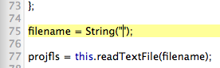

BrainVoyagerBot's VTC Helper assists in automating the process of VTC file creation in BrainVoyager. While it's possible completely automate VTC creation through AppleScript, there is no command in the BrainVoyager AppleScript library for specifying target VTC bounding box coordinates. Therefore, the best solution to automate VTC file creation for those who need to specify bounding box coordinates is to run a JavaScript file from within BrainVoyager. VTC Helper facilitates this process by generating a text file with the paths to necessary files for VTC creation, which can then be read by the included JavaScript file "VTC Maker.js" to automatically create the VTC files.
Click Select Folder and choose a folder to process. Currently, BrainVoyagerBot can only output text files for a single subject, and the selected folder must include the necessary files for VTC creation (at least one preprocessed .fmr file, _IA.trf, _FA.trf, and .vmr file). In future versions of BrainVoyagerBot, it will be possible to process multiple subjects.
Click Generate, and the text file will be created. The file is given the default name VTC_Creator.txt, and it is stored in the same folder the user selected originally (ability to customize name and save location coming in future versions). Once the text file is created, the path to the file will be copied to the clipboard automatically. If BrainVoyager is already open, the "Edit and Run Scripts..." dialog will open automatically, and a notification will appear as shown below:
If BrainVoyager was not already open, it will be launched automatically, but since BrainVoyagerBot cannot communicate with BrainVoyager until the user Accepts the Welcome pane, a Finder message will appear saying that the text file was created successfully, but the user needs to manually open the Edit and Run Scripts pane in BrainVoyager.
The text file output will include the total number of lines in the file on the first line (necessary for BrainVoyager to read the text file), and the paths to each preprocessed .fmr file as well as the other reference files. Bounding box coordinates are printed at the end.* The text file resembles the following:
To begin VTC creation, paste the path to the text file between the quotes at the bottom of the "VTC Maker.js" script:
*This is necessary because of a strange bug in BrainVoyager where XYZ coordinates for the bounding box are scrambled in the actual .bbx text file. When BrainVoyager reads the .bbx file during VTC creation done manually in the GUI, there is no issue (it descrambles them properly). However, if the .bbx file values are going to be read by an external script, they need to be manually descrambled in the script to the correct values.